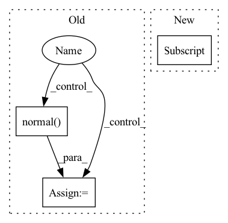

Pattern ID :34511
Before Change
if query_num % 2 == 1:
seq.append(X)
elif self.grad_method == "sgd":
for i in range(query_num):
noise = torch.normal(mean=0.0, std=1.0, size=X.shape, device=X.device)
X1 = X + sigma * noise
seq.append(X1)
elif self.grad_method == "hess":
for i in range(query_num):After Change
shape = list(X.shape)
shape[0] = query_num
if self.grad_method == "nes":
shape[0] = shape[0] // 2
noise = sigma * torch.normal(mean=0.0, std=1.0, size=shape, device=X.device)
zeros = torch.zeros_like(X)In pattern: SUPERPATTERN
Frequency: 3
Non-data size: 3
Instances Fragment ID: 99295531
Project Name: ain-soph/trojanzoo
Commit Name: bc3d366258b45942115b6b86ae8466dac52ac154
Time: 2020-06-30
Author: ain-soph@live.com
File Name: trojanzoo/optim/pgd.py
M Class Name: PGD
N Class Name: PGD
M Method Name: gen_seq(3)
N Method Name: gen_seq(3)
M Parent Class: Optimizer
N Parent Class: Optimizer
M File Name: trojanzoo/optim/pgd.py
N File Name: trojanzoo/optim/pgd.py
M Start Line: 152
M End Line: 174
N Start Line: 154
N End Line: 178
Before Change
local_models = extra_auxiliary_info
for parameters in local_models:
for p in parameters:
// Clip weight
p.data = p.data / torch.max(torch.ones(size=p.shape),
torch.abs(p.data) / self.w_clip)
noise = torch.normal(mean=0, std=self.nbafl_scale_u, size=p.shape)
p.data += noise
def add_global_noise(
self,After Change
def add_local_noise(self, local_grad: dict):
for k in local_grad.keys():
// Clip weight
local_grad[k] = local_grad[k] / torch.max(torch.ones(size=local_grad[k].shape),
torch.abs(local_grad[k]) / self.w_clip)
return super().add_local_noise(local_grad=local_grad)
Fragment ID: 99295529
Project Name: fedml-ai/fedml
Commit Name: d51b3d4f98d6d0f89f790463f7072719cfb70fca
Time: 2022-09-13
Author: sshan0731@hotmail.com
File Name: python/fedml/core/dp/frames/NbAFL.py
M Class Name: NbAFL_DP
N Class Name: NbAFL_DP
M Method Name: add_local_noise(2)
N Method Name: add_local_noise(3)
M Parent Class: BaseDPFrame
N Parent Class:
M File Name: python/fedml/core/dp/frames/NbAFL.py
N File Name: python/fedml/core/dp/frames/NbAFL.py
M Start Line: 21
M End Line: 34
N Start Line: 32
N End Line: 37
Before Change
if transform["type"] == "random_noise":
stdev = transform["stdev"]
deterministic = transform.get("deterministic", True)
if deterministic:
noise = self.rng.normal(loc=0, scale=stdev, size=tuple(input.size()))
else:
noise = np.random.normal(loc=0, scale=stdev, size=tuple(input.size()))
noise = input.new_tensor(noise, dtype=input.dtype)After Change
transformed_input = self.random_noise(transform, transformed_input)
elif transform["type"] == "random_scale":
transformed_input = self.random_scale(transform, transformed_input)
elif transform["type"] == "random_offset":
transformed_input = self.random_offset(transform, transformed_input)
else:
raise NotImplementedError Fragment ID: 99295545
Project Name: mstoelzle/solving-occlusion
Commit Name: 67ab55354ebc53fd4476b6a30f4dbe7ea26d977e
Time: 2020-10-22
Author: maximilian@stoelzle.ch
File Name: src/datasets/transforms.py
M Class Name: Transformer
N Class Name: Transformer
M Method Name: __call__(2)
N Method Name: __call__(2)
M Parent Class:
N Parent Class:
M File Name: src/datasets/transforms.py
N File Name: src/datasets/transforms.py
M Start Line: 13
M End Line: 27
N Start Line: 13
N End Line: 23